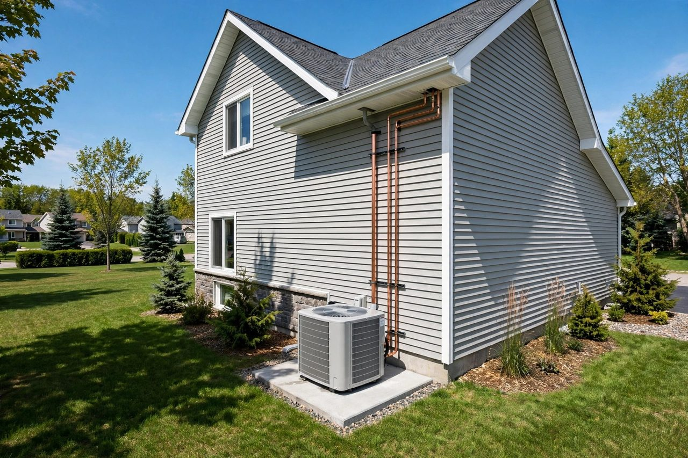
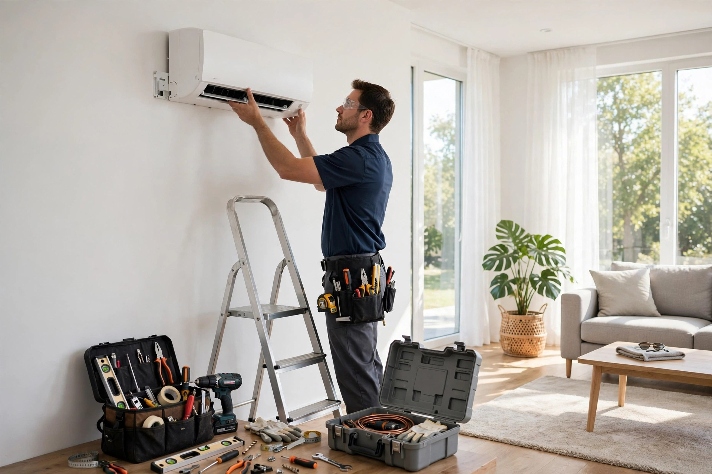
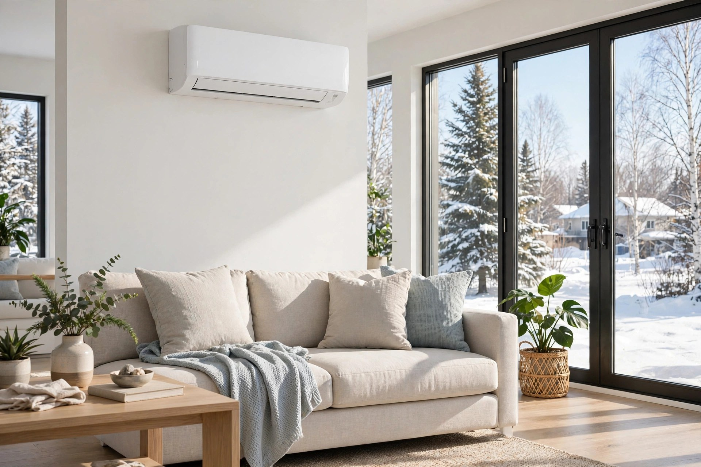
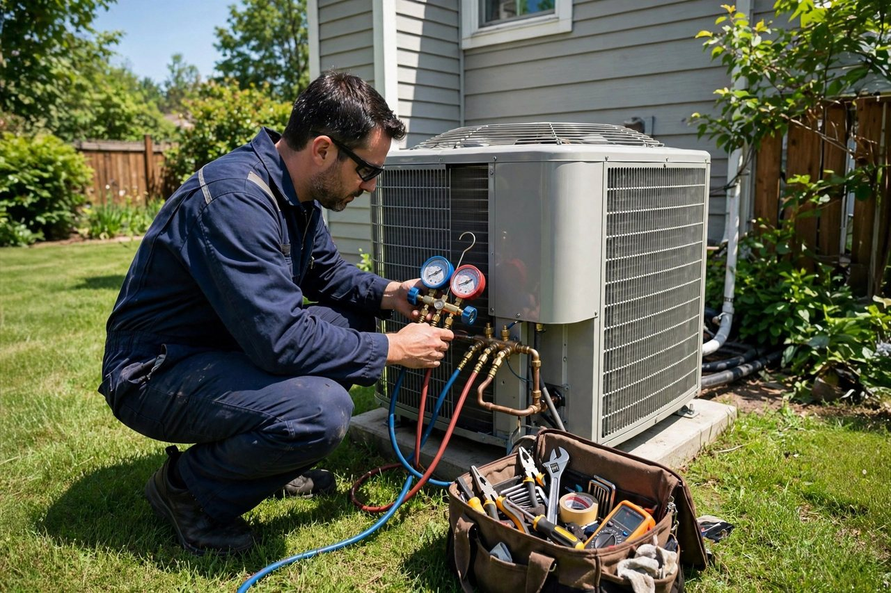

Thermopompe murale
Chauffage et climatisation pièce par pièce, sans conduits — idéale pour cibler les pièces à vivre.

L'Assomption, Québec · Chauffage et climatisation
Thermopompe murale et système central : vente, installation, réparation et entretien — un travail propre, expliqué clairement, fait du premier coup.
Soumission gratuite
Thermopompe murale ou système central — on évalue votre besoin et on vous propose la bonne solution, sans pression.
Ce que nous faisons
Chauffage et climatisation pièce par pièce, sans conduits — idéale pour cibler les pièces à vivre.
Un réseau de conduits pour une température uniforme dans toute la maison, été comme hiver.
Des systèmes adaptés à votre maison et à votre budget — on vous conseille la bonne puissance.
Pose propre et soignée, vérifiée au démarrage — on laisse les lieux impeccables.
Panne de chauffage ou de clim? On diagnostique et on répare murale et système central.
Nettoyage et vérification annuelle pour garder votre système efficace et durable.

Pourquoi nous choisir
On croit aux choses simples : un bon conseil sur le système qu'il vous faut, un prix expliqué d'avance et une installation propre. Vous savez exactement ce qui est fait — et pourquoi.
Nos installations


Ils en parlent
Personnel sympatique, rapidité du service, je recommande Vair Climatisation à tout le monde!
Mylfranc — Pages Jaunes, 28 mars 2010
★ Lisez tous les avis sur Pages Jaunes →Merci à la super équipe de Vair Climatisation. Grâce à eux, je peux travailler au frais malgré la température extérieure de 36. Équipe professionnelle, rapide et efficace. Un service hors-pair.
Client — Pages Jaunes, 26 mai 2020
Bon à savoir
Vente, installation, réparation et entretien de thermopompes murales et de systèmes centraux — chauffage et climatisation.
La murale chauffe et climatise pièce par pièce sans conduits; le système central donne une température uniforme dans toute la maison via des conduits. Appelez-nous — on vous conseille selon votre maison.
Appelez-nous au (514) 820-6890 — on discute de votre besoin et on vous donne un prix clair avant de commencer les travaux.
Voyez la section Avis ci-dessus et la page Pages Jaunes de Vair Climatisation pour les commentaires de nos clients.
Venez nous voir